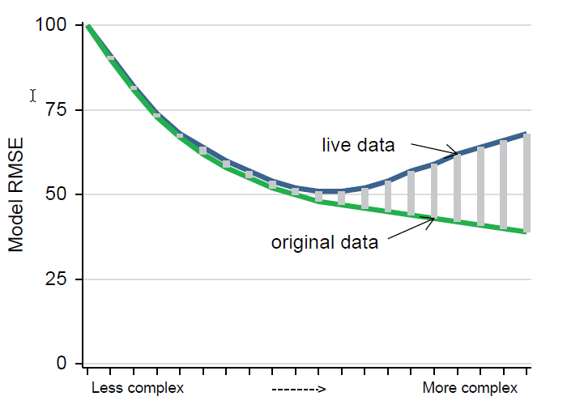

Imagine you want to sell your car soon and need to predict its price. You have data on similar used cars, and several regression models could help estimate its value now and in a year. How do you choose the best model?
Or, take an ice cream shop—using past sales and temperature data, you want to predict sales for the coming days. What factors should you consider to ensure your prediction is as accurate as possible?
Prediction Basics: The Process
The idea of behind prediction is that we want to assign a value of \(y\)(\(\hat y\)) (target or outcome) for observations we do not have the value.
What we have, in our original data or working sample, is a set of observations with \(y\) and \(x\) values. We use them to “learn” the patterns of association between \(y\) and \(x\).
But for the target observations, we only have \(x\) values.
Prediction Basics: The Process
The process of prediction involves:
Determine what is the target variable \(y\) and the features\(x\).
Using the original data to estimate a model that describes the patterns of association between \(y\) and \(x\).
Using the estimated model to predict the value of \(y\) for the target observations.
Evaluation of the prediction (how actual data compares to predicted data)
Rinse and repeat: Choose a different model, evaluate, choose the best model.
Best model for the Live data not the original data.
CS: Price cars
You want to sell your car through online advertising
Target is continuous (in dollars)
Features are continuous or categorical
The business question:
What price should you put into the ad?
CS: Price apartments
You are planning to run an AirBnB business
Target is continuous (in dollars)
Features are varied from text to binary
The business question:
How should you price apartments/houses?
CS: Predict company’s exit from business
You have a consulting company
Predict which firms will go out of business (exit) from a pool of partners
Target is binary: exit / stay
Features of financial and management info
Business decision:
Which firms to give loan to?
Predictive Analysis: what is new?
Most of econometrics focused on finding relationships between \(X\) and \(Y\)
What is the relationship like (+/-, linear, etc.)
Is it a robust relationship – true in the population /general pattern? (causal?)
Now, we use \(x_1, x_2, \dots\) to predict \(y\): \(\hat{y}_j = \hat{f}(x_j)\), How is this different?
We care less about
Individual coefficient values, multicollinearity
We still care about the stability of our results.
But, should we care about causality?
Not so much, we care more about making the best prediction.
Different types of prediction
Target variables
What are we predicting?
\(Y\) is quantitative (e.g price)
Quantitative prediction. Expected price of a car given its characteristics.
its a “Regression” problem
We could obtain a point prediction or an interval prediction (As before)
\(Y\) is binary (e.g. Default or nor)
\(Y\) takes values in a finite set of (unordered) classes (survived/died, sold/not sold, car model)
We may want to types of predictions: Probability prediction (\(\hat P(y|x=1)\)) or classification (\(\hat y = 1 \text{ or }0| x\))
Time series prediction (Forecasting).
Make predictions about the future based on historical and current data.
\(\hat y_t = f(x_{t-1}, x_{t-2}, \dots)\)
What is Different?
In principle, the process is the same as before, but we have a diffent goal.
We need to pay more attention to other aspects of the process.
Label Engeneering: What transformation is suitable for the target variable?
Feature engineering (variable selection): What variables and functional forms should be included
Model estimation and prediction, based on variable selection
Decisions regarding model complexity and Specification (Know-How or Machine Learning)
Model evaluation considering complexity and loss
Key idea: Focus on systematically combine estimation and model selection
The Tool: Supervised Machine Learning
Supervised Machine Learning is a set of tools that help us predict the value of a target variable \(Y\) based on a set of features \(X\).
We will use one of the oldest and most commonly used method:
Linear Regression
The Prediction Error
We have seen this.
The Regression model can produce a Predicted value \(\hat{y}_j\) for target observation \(j\)
but, actual value \(y_j\) is not known (that is why we are predicting)
Thus, there will be a prediction error
\[e_j = \hat{y}_j - y_j
\]
Error = actual value - predicted value
The Prediction Error
The ideal prediction error, is zero: our predicted value is right on target.
Rare…
The prediction error carries information: direction and size.
Direction of miss:
Positive if we overpredict
Negative if we underpredict
Degree of wrongness depends on the decision problem. (price is right?)
Size:
magnitude of the error may depend on the nature of the problem and the loss function.
Decomposing the prediction error
Assume the best model for \(Y\) is \(Y= f(X,Z)+\epsilon\), but we estimate \(Y^E = g(X,Z)\), and obtain \(\hat g(X,Z)\)
The prediction error can be decomposed into three parts:
estimation error: Difference between \(g(X)\) and \(\hat g(X)\)
model error: Difference between \(f(X)\) and \(g(X)\).
genuine error: error that cant be eliminated even if have the best possible model. \(\epsilon\)
Interval prediction for quantitative target variables
One advantage of regressions - it’s easy quantify uncertainty of prediction
This can be used to obtain Interval predictions
Interval predictions quantify 2-out-of-3 sources of prediction uncertainty: estimation error and genuine (or irreducible) error.
They do not include the third source, model uncertainty! (Bayesian methods can help with this)
The 95% prediction interval (PI) tells where to expect the actual value for the target observation.
The PI for linear regression requires homoskedasticity. (but could be relaxed)
The Loss function
Not all errors are created equal
Loss Functions
We use a Loss function to quantify the cost of prediction error
It attaches a value to the prediction error, specifying how bad it is
Thus, Loss function determines best predictor
Ideally, it is derived from decision problem,
How much more costly is to overpredict than underpredict?
In practice, highly crafted loss functions are rare (Machine learning, Neural Networks, Etc), so we use common ones
Loss functions could be used to both estimate, but also to evaluate/compare models
Plot Twist: Loss function for OLS is the L2 Square loss function
Loss Functions
The most important Loss functions have the following characteristics:
Symmetry: losses due to errors in opposing direction are similar
Asymmetric loss: overprediction is more costly than underprediction
Convexity: Twice as large errors generate more than twice as large losses. (We penalize large errors more than small ones)
Linear loss: Errors are penalized proportionally to their size
The loss function for predicting the value of our used car depends on how we value money and how we value how much time it takes to sell our car (value of your car).
A too low prediction may lead to selling our car cheap but fast;
A too high prediction may make us wait a long time and, possibly, revising the sales price downwards before selling our car.
What kind of loss function would make sense?
Examples 2 - creditors
Creditors decide whether to issue a loan only to potential debtors that are predicted to pay it back with high likelihood.
Two kinds of errors are possible:
debtors that would pay back their loan don’t get a loan
debtors that would not pay back their loan get one nevertheless.
The costs of the first error are due to missed business opportunity; the costs of the second error are due to direct loss of money.
These losses may be quantified in relatively straightforward ways.
What kind of loss function would make sense?
Common loss functions
\[SQR: L(e_j) = e^2_j = (\hat{y}_j - y_j)^2
\]
The most widely used loss function
Symmetric: Losses due to errors in opposing direction are same
Convex: Twice as large errors generate more than twice (4x) as large losses
\[ABS: L(e_j) = |e_j| = Abs(\hat{y}_j - y_j)
\]
Used for Median regression (Quantile regression)
Symmetric: Losses due to errors in opposing direction are same
Linear: Twice as large errors generate twice as large losses
Quantile Regressions use Asymetric loss functions
Mean Squared Error: MSE
The most common way to quantify and aggregate the loss function is using the Mean Squared Error (MSE)
Squared loss \(\rightarrow\) Mean Squared Error (MSE)
OLS is unbiased. Some other methods will allow for some bias in return for lower variance.
Finding the best model
Too hot nor too cold, but just right
Model selection
Model selection is finding the best fit while avoiding overfitting, and aiming for high external validity.
To do this, we aim to choose a model that is flexible enough to capture the patterns in the data but not too flexible to capture noise.
Bias-Variance tradeoff
Balancing the complexity of the model
Consider two models. They could be different for two reasons:
different functional forms (spline vs. quadratic)
different number of variables (simple vs. complex)
How to choose a model?
Typically, we would say that the best model is the one that has the highest \(R^2\) or the lowest MSE.
This may be true for the original data, but not for the target observations.
Also, \(R^2\) and MSE always increase when we add more variables.
So, what we need is a way to check how well the models predict the target observations. (unobserved cases)
We want to avoid overfitting at all costs.
Example
Assume the true model is \(y = 1 + x -.5 x^2 + \epsilon\), with \(\epsilon ~ N(0,1.5)\)
we create 100 observations from the above process but use only 30 for modeling. We try running regressions with ever more complex models
Make predictions, and see how well we did.
\(R^2\)
MSE
OoS MSE
^1
.3224669
1.934762
2.949084
^2
.6255072
1.069401
2.93478
^3
.6344791
1.043781
2.978827
^4
.713217
.8189369
4.138006
^5
.7259535
.7825666
3.557651
See how \(R^2\) increases monotonously, improving “in-sample fit”. But, the OoS MSE worsens after a certain point.
Example 2

Underfit vs overfit
A model that fits the data worse in the “working/original” data compared to the “live/target” data is said to “underfit” the model.
Simple: we should build a better model.
If the model fits the data working better than target data, then it over-fits it. Needs to be corrected.
Overfitting
Overfitting is a key aspect of external validity
Finding a model that fits the data better than alternative models, but makes worse actual prediction.
Overfitting is a common problem in prediction analysis
Reason for overfitting
The typical reason for overfitting is fitting a model that is too complex on the dataset. - Complexity: number of estimated coefficients - Often: fitting a model with too many predictor variables. - Including too many variables from the dataset that do not really add to the predictive power of the regression. - Problems of multicollinearity, too many interactions, etc. - Too detailed nonlinear patterns - as piecewise linear splines with many knots - polynomials of high degree.
Finding the best model by best fit and penalty
As shown earlier, traditional measures of fit, such as \(R^2\) and MSE, are not good for finding the best model. They always increase with the number of variables.
We were only able to conclude model fitness because we had the true model (and the Out-of-Sample data)
This is not the case in practice.
So, how do we find the best model?
Indirectly: Penalize the number of variables
Directly: Use a training-test sample
Indirect evaluation criteria
Main methods: AIC, BIC and adjusted \(R^2\)
Advantage: easy to compute
Disadvantage: assumptions. They may not penalize enough.
Adjusted \(R^2\) – just add a penalty for having many RHS vars
BIC puts heavier penalty on models with many RHS variables, than AIC.
Example, redone
Code
* This is the full code for previous and current exampleclearsetseed 10setobs 100gen x = runiform(-2 ,2)geny = 1 + x - 0.5 * x^2 + 1.5* rnormal()captureprogramdrop fit_stat1program fit_stat1, rclasstempvar yhat smpgen`smp' = e(sample)predict`yhat'replace`yhat'=(y-`yhat')^2matrix result=e(r2)sum`yhat'if`smp', meanonlymatrix result=result, r(mean)sum`yhat'if !`smp', meanonlymatrix result=result, r(mean)returnmatrix result = resultendregy c.x if_n<=30fit_stat1matrix rr2=r(result)regy c.x##c.x if_n<=30fit_stat1matrix rr2=rr2\r(result)regy c.x##c.x##c.x if_n<=30fit_stat1matrix rr2=rr2\r(result)regy c.x##c.x##c.x##c.x if_n<=30fit_stat1matrix rr2=rr2\r(result)regy c.x##c.x##c.x##c.x##c.x if_n<=30fit_stat1matrix rr2=rr2\r(result)captureprogramdrop fit_stat2program fit_stat2, rclasstempvar yhat smpgen`smp' = e(sample)predict`yhat'replace`yhat'=(y-`yhat')^2 matrix result=e(r2), e(r2_a)sum`yhat'if`smp', meanonlymatrix result=result, r(mean)sum`yhat'if !`smp', meanonlymatrix result=result, r(mean)qui: estaticmatrix result=result, r(S)[1,5..6]returnmatrix result = resultendregy c.x if_n<=30fit_stat2matrix rr2=r(result)regy c.x##c.x if_n<=30fit_stat2matrix rr2=rr2\r(result)regy c.x##c.x##c.x if_n<=30fit_stat2matrix rr2=rr2\r(result)regy c.x##c.x##c.x##c.x if_n<=30fit_stat2matrix rr2=rr2\r(result)regy c.x##c.x##c.x##c.x##c.x if_n<=30fit_stat2matrix rr2=rr2\r(result)
\(R^2\)
\(aR^2\)
MSE
OoS MSE
AIC
BIC
^1
0.3225
0.2983
1.9348
2.9491
108.9358
111.7382
^2
0.6255
0.5978
1.0694
2.9348
93.1493
97.3529
^3
0.6345
0.5923
1.0438
2.9788
94.4218
100.0266
^4
0.7132
0.6673
0.8189
4.1380
89.1439
96.1499
^5
0.7260
0.6689
0.7826
3.5577
89.7810
98.1882
Finding the best model by training and test samples
Similar to bootstrapping (brute force approach for SE), its also possible to use a “bute-force” approach to find the best model.
This would require “imitating” the process of out-of-sample prediction.
Cut the dataset into training and test sample (80-20 ?)
Choose Some evaluation criterion (loss function)
Estimate the model on the training sample
Predict and evaluate the model on the test sample
Problem: 80% (or less), may be too small training. And 20% (one shoot) could be different from the rest of the data.
Lets make things Better: K-fold cross-validation
If one is not enough, why not use more?
Split sample into \(k=5\) groups (equal size)
Now, assume that each “fold” is the test sample, and the rest is the training sample.
Do the excercise k times, and every observation will be in the test sample once.
Add up the MSEs, or get the average MSE.
Still has a random component, but less so than a single split.
K-fold cross-validation
Code
* This is the full code for previous and current exampleclearsetseed 10qui: setobs 30gen x = runiform(-2 ,2)geny = 1 + x - 0.5 * x^2 + 1.5* rnormal()** Create 5 foldsgen fold = mod(_n,5)+1captureprogramdrop fit_stat3program fit_stat3, rclasstempvar yhat auxqui:gen`yhat' = .qui:forvalues i = 1/5 {reg`0'if fold!=`i'predict`aux'replace`yhat' = `aux'if fold==`i'drop`aux' }qui: replace`yhat'=(y-`yhat')^2 sum`yhat', meanonlyreturnscalarmse = r(mean)endfit_stat3 y c.x display"^1, mse: " %5.3f `r(mse)'_nfit_stat3 y c.x##c.x display"^2, mse: " %5.3f `r(mse)'_nfit_stat3 y c.x##c.x##c.x display"^3, mse: " %5.3f `r(mse)'_nfit_stat3 y c.x##c.x##c.x##c.x display"^4, mse: " %5.3f `r(mse)'_nfit_stat3 y c.x##c.x##c.x##c.x##c.x display"^5, mse: " %5.3f `r(mse)'_n
^1, mse: 4.851
^2, mse: 3.196
^3, mse: 2.805
^4, mse: 3.085
^5, mse: 3.160
When K \(\rightarrow\) N. LooCV
K-fold cross-validation has two weaknesses:
Randomness: different splits may lead to different results
Small sample size for training may be too small
An alternative to address both is increasing K … until K=N
This is the Leave-one-out cross-validation (LOOCV)
Train on N-1 observations, predict on the left-out (N=1) observation
This can be computationally expensive, unless you are estimating Linear regression models.
LOOCV its really fast for OLS
BIC vs test RMSE
In practice, BIC is the best indirect criterion – closest to test sample.
The advantage of BIC is that it needs no sample splitting which may be a problem in small samples.
The advantage of test MSE is that it makes no assumption.
BIC is a good first run, quick, is often not very wrong.
Test MSE is the best, but may be computationally expensive.
External validity and stable patterns
BIC, Training-test, k-fold cross-validation… All very nice
In the end, they all use the information in the data.
How would things look for the target observation(s)? unknown!!
The issue of stationarity – how our data is related to other datasets we may use our model
In the end we can’t know but need to think about it.
Plus, if there is no external validity, your model fit in an outside data source is likely to be worse…
External validity and stable patterns
Most predictions will be on future data
High external validity requires that the environment is stationary.
Stationarity means that the way variables are distributed remains the same over time.
Ensures that the relationship between predictors and the target variable is the same in the data and the forecasted future.
If the relationship breaks down whatever we establish in our data won’t be true in the future, leading to wrong forecasts.
External validity and stable patterns
External validity and stable patterns - Very broad concept
It’s about representativeness of actual data \(\rightarrow\) to live data
Remember hotels? (other dates, other cities).
Domain knowledge can help. Inner knowledge of the process can help.
Study if patterns were stable in the past / other locations were stable can help.
Main takeaways
Prediction uses the original data with \(y\) and \(x\) to predict the value of \(y\) for observations in the live data, in which \(x\) is observed but \(y\) is not
Prediction uses a model that describes the patterns of association between \(y\) and \(x\) in the original data
Cross-validation can help find the best model in the population, or general pattern, represented by the original data
Stability of the patterns of association is needed for a prediction with high external validity